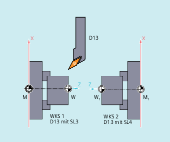

Mit gesetzten Settingdaten SD42900 $SC_MIRROR_TOOL_LENGTH und SD42910 $SC_MIRROR_TOOL_WEAR ungleich Null können Sie Werkzeuglängenkomponenten und Komponenten der Basismaße mit Verschleißwerten deren zugehörigen Achsen spiegeln.
Settingdatum ungleich Null:
Es werden die Werkzeuglängenkomponenten ($TC_DP3, $TC_DP4 und $TC_DP5) und die Komponenten der Basismaße ($TC_DP21, $TC_DP22 und $TC_DP23), deren zugehörige Achsen gespiegelt sind, ebenfalls gespiegelt - durch Vorzeicheninvertierung.
Die Verschleißwerte werden nicht mitgespiegelt. Sollen diese ebenfalls gespiegelt werden, muss das Settingdatum SD42910 $SC_MIRROR_TOOL_WEAR gesetzt sein.
Settingdatum ungleich Null:
Es werden die Verschleißwerte der Werkzeuglängenkomponenten, deren zugehörige Achsen gespiegelt sind, ebenfalls gespiegelt - durch Vorzeicheninvertierung.
Siehe auch:
Allgemeine Informationen zur Werkzeugkorrektur-Sonderbehandlung